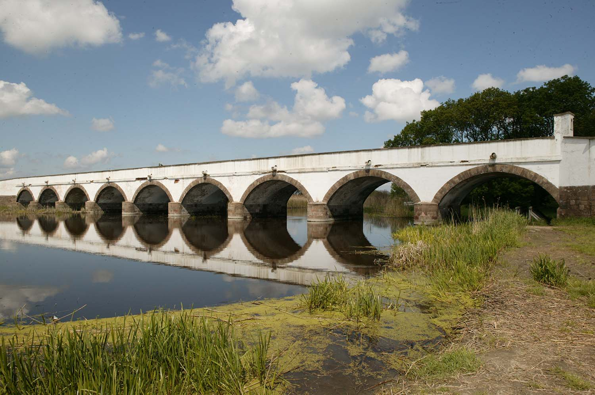

A kelet-magyarországi Hortobágy pusztája Európa legnagyobb egybefüggő természetes füves térsége. Mielőtt a mongolok és később a törökök felégették az itteni falvakat erdős térség volt, majd a visszatelepülők állatai letarolták a növényzetet, így alakult ki mai képe. Az 1973-ban létrehozott Hortobágy Nemzeti Parkhoz a pusztán kívül hozzátartozik a Nagykunság egy jelentős része is. A területen hagyományos állattartást és legeltetést folytatnak, és olyan ősi magyar állatfajtákat tartanak mint a szürke marha. A vízfolyások miatt már a 13. században kőhidakat építettek a pusztában, a hidak közül leghíresebb a kilenclyukú híd. A Puszta másik jellegzetes épülettípusa a csárda, ezek a 18. és a 19. században épültek. Ezek a fogadók általában két egymással szemben álló földszintes épületből állnak, amelyben kocsmák, vendégszobák és istállók is voltak. A nemzeti park gondoskodik a puszta egyedi jellegzetességeinek és hagyományainak megőrzéséről.
